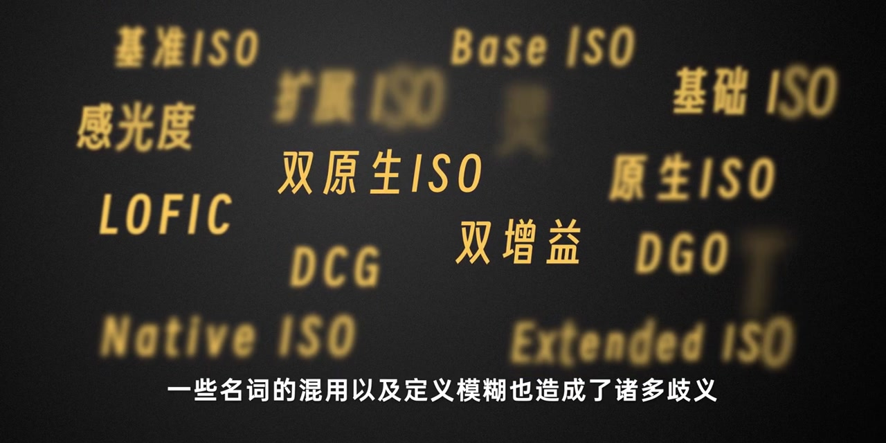
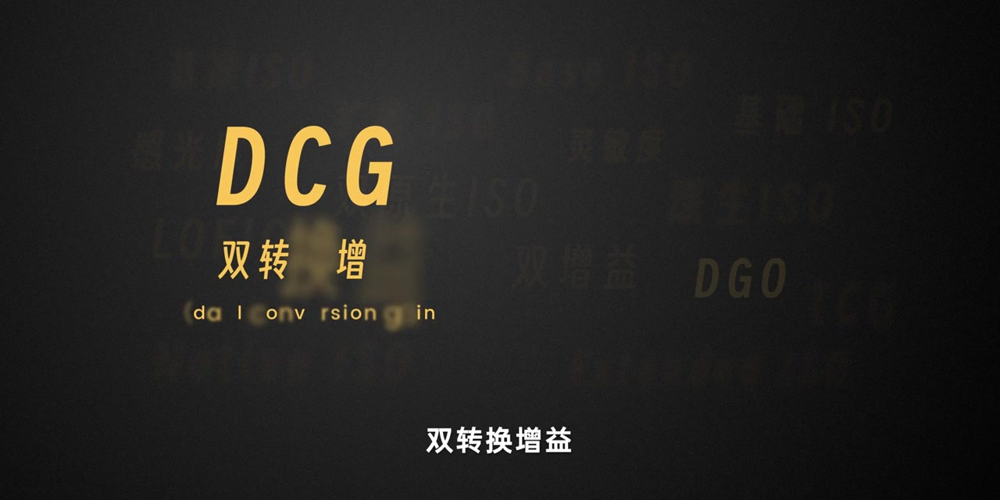
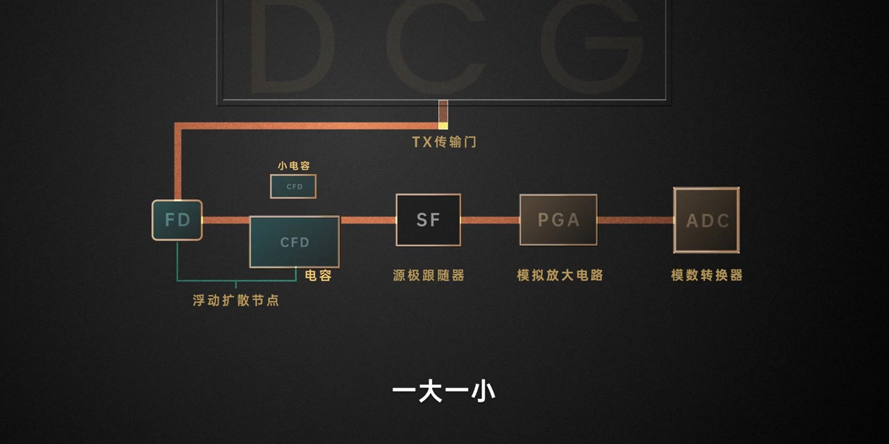
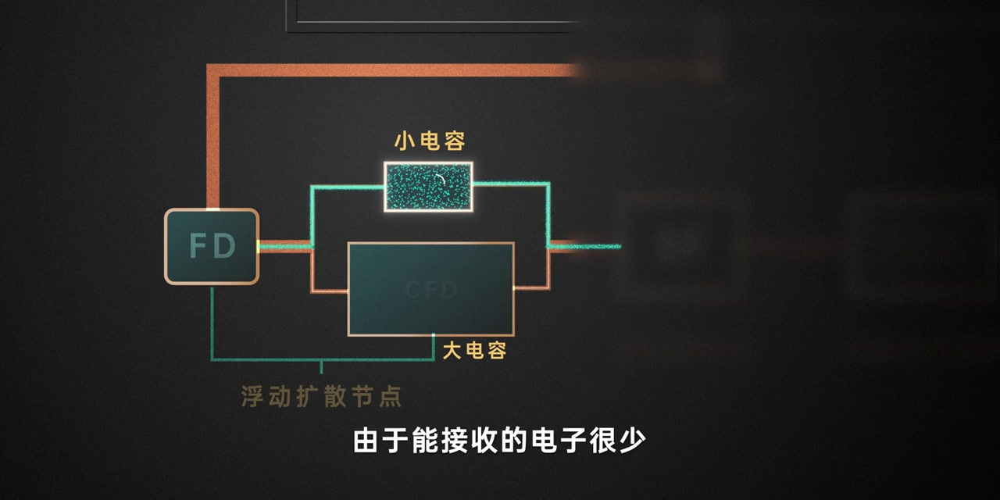
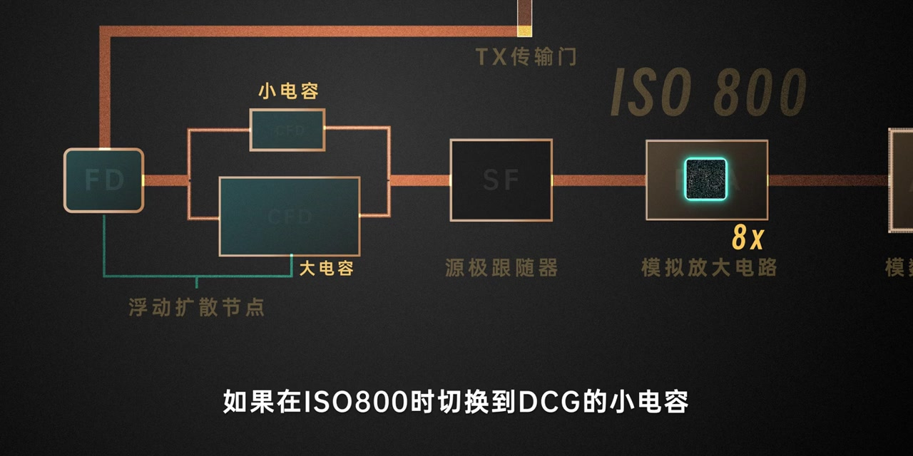
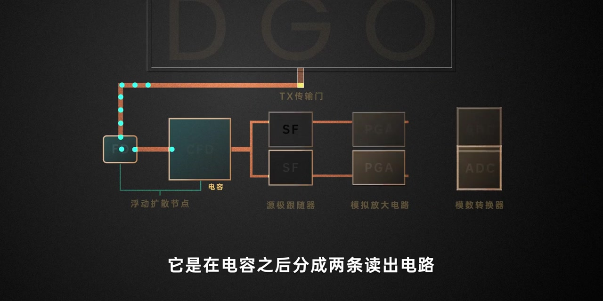
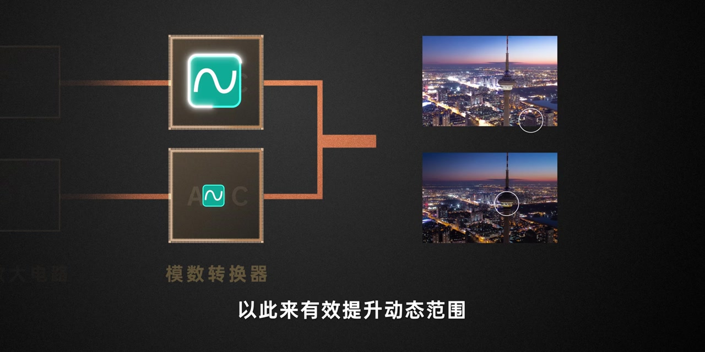
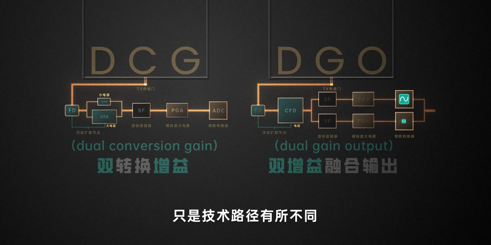

开场：ISO 相关名词太多，歧义由此产生
画面一上来就是一堆漂浮词：双原生 ISO、双增益、Native ISO、DCG、DGO、LOFIC……旁白先点题：与 ISO 相关的名词很多，混用和定义模糊造成了不少歧义，而争论最多的大概就是「双原生 ISO」和「双增益」这一对。
画面字幕：「一些名词的混用以及定义模糊也造成了诸多歧义」
说明：Whisper 常把「歧义」识成「奇异」，「争论」识成「争了」，「DCG」识成「DCJ」，「DGO」识成「DJO」，「双原生」识成「双元生」，「动态范围」识成「动弹范围」，「电荷」识成「电货」，「低转换增益」识成「D转换增益」，「微伏」识成「W」，「称为/叫」识成「成为/较」，「泛指」识成「范制」，「易于传播」识成「亦于传播」。下文叙述以可见字幕与电路动画为准；页面末尾仍完整保留全部 Whisper 分段。

两条主流技术：DCG 与 DGO
旁白收束到传感器侧：目前应用广泛的有两种。第一种是 DCG（Dual Conversion Gain，双转换增益）；第二种是 DGO（Dual Gain Output，双增益融合输出）。画面先用大字打出 DCG 标题页，背景里还隐约闪着 LCG、Native ISO 等词。
旁白：「一个是DCG，双转换增益；一个是DGO，双增益融合输出」

DCG 核心：浮动扩散节点上的一大一小电容
旁白接上一段关于电容与转换增益的铺垫：浮动扩散节点的电容 CFD 决定电荷到电压的转换增益。双转换增益的做法很直接——设计两个电容，一大一小，于是就有了两个基准 ISO。
光线充足时走大电容：能接收更多电子，电荷转出的电压更小，也就是低转换增益（LCG），既保住动态范围，又有助于画质。
画面字幕与电路标注：「一大一小」——FD / 小电容 CFD / 大电容 CFD → SF → PGA → ADC

光线不足：切到小电容，走高转换增益
光线不够时切换小电容。小电容能接住的电子很少，但可以把电荷直接转成更高电压，也就是高转换增益（HCG）。画面用青色电子点把「小电容更密、更挤」的感觉画出来，字幕也写着「由于能接收的电子很少」。

算一笔账：ISO800 时 PGA×8，还是直接切第二档基准 ISO
旁白用数字举例（画面与口述约在 ISO100→ISO800 量级）：大电容下，假设每个电子先转成约 10μV；抬到 ISO800 时，若仍靠 PGA 放大 8 倍，电压到约 80μV/电子，但前端读出噪声也会跟着放大 8 倍。
若在 ISO800 切换到 DCG 的小电容——也就是第二档基准 ISO——则靠高转换增益直接得到约 80μV/电子，不必再让 PGA 放大，前端读出噪声也就不会被放大，暗光画质更干净。
画面字幕：「如果在ISO800时切换到DCG的小电容」

DGO：电容之后拆成两条读出，再融合
旁白转向 DGO：它和 DCG 不同，不是在 FD 上切换大小电容，而是在电容之后分成两条读出电路，把同一批电荷转成两路电压信号。例如 ISO800 时，一路做 8 倍模拟放大，一路不放大（低增益），再分别经两个 ADC 读出，后期融合——低增益保住高光细节，高增益多记暗部，从而抬高动态范围。


优劣对照：DGO 擅长动态范围，DCG 更偏暗光
旁白给出立场鲜明的对比：DGO 的优势在于能大幅提升动态范围；但谈到暗光场景，则是 DCG 更有优势。这不是「谁取代谁」，而是两条技术路径各自的强项。
旁白（校正理解）：「DGO 的优势在于能够大幅提升动态范围，但是对比暗光场景则是 DCG 更有优势」
收束：叫法可以吵，技术名与 ISO 符号各司其职
有人习惯把 DCG 叫「双增益」、把 DGO 叫「双原生 ISO」。旁白提醒：两者翻译过来都可以叫双增益，只是路径不同；而 ISO 的本质又是增益，所以把两者都称作双原生 ISO 也说得通。具体讨论用技术名称，泛指时沿用 ISO——ISO 这个符号本来就是为了统一标准、便于传播。
